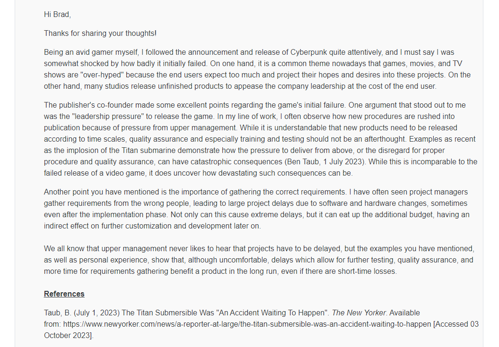
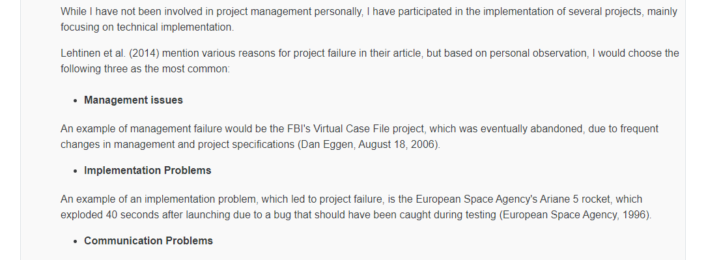
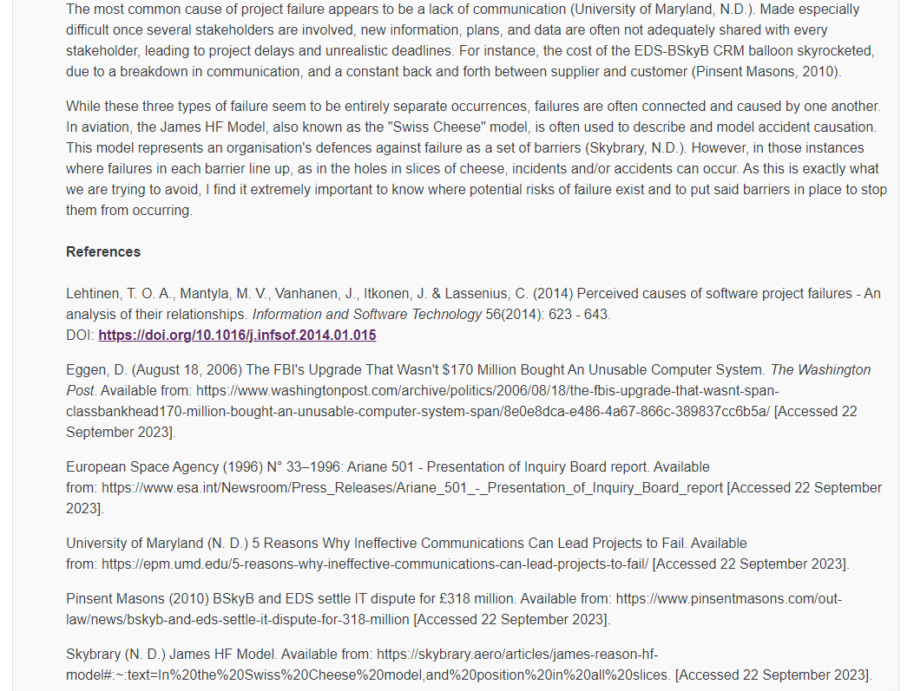
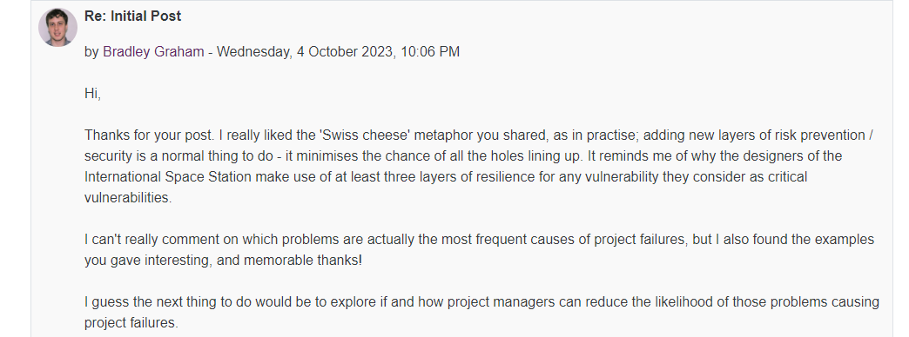
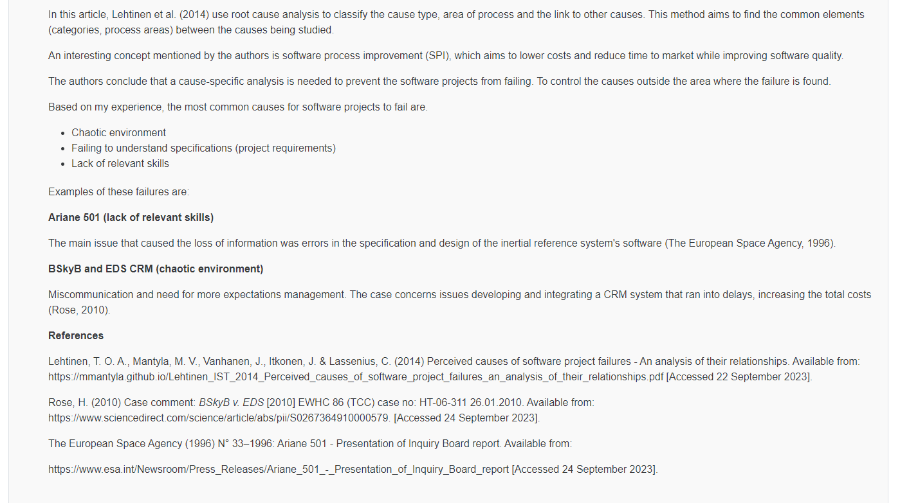
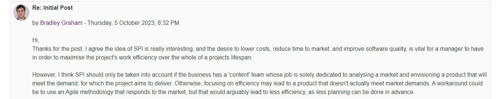
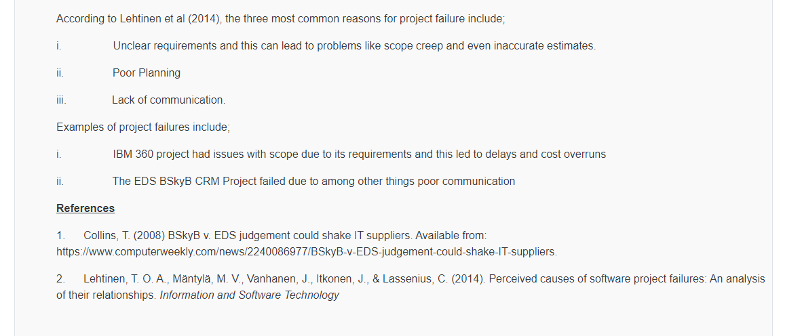
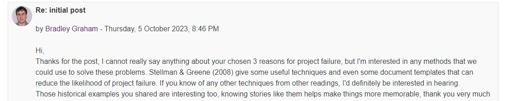
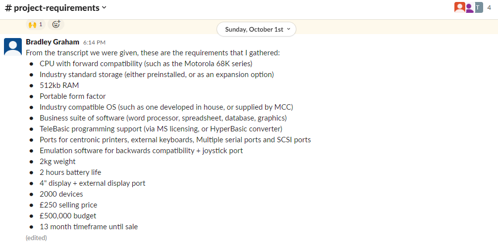

Week 2
Reading
This week our main reading was about Behaviour Driven Development (BDD) and the Gherkin language. While that reading was only an introduction to BDD and Gherkin, I took some time to look at how Gherkin is used in practise. I discovered Cucumber automated testing, but more importantly in my opinion is the find of a paper by Oliveira et al (2019), titled "How to Evaluate BDD Scenerios' Quality"[DOI] which provides some critical theory to back up the good practise using Gherkin. More specifically, the paper derives a set of quality attributes for BDD scenarios, which are important for making specifications more easily understandable by business stakeholders while being testable using dedicated, automatable tools. This massively helped justify the value of Gherkin's syntax and utility to me.
Class Discussion
This week I recieved a reply to last weeks post, which was great to get:
And continuing the class discussion, these were the replies I sent to my classmates own posts, based on anecdotal experience this time, so that I could focus on the group project:
Student A
  Student B
 Student C
 Group Project
This week we began the planning phase of our project. We had our first group meeting, where we distributed tasks. I've been assigned the responsibility of scheduling the project so I plan on gathering a list of project tasks organised by SDLC phases, from which I can carefully allocate time. We're yet to decide on which SDLC methodology specifically that we'll use, but it'll be a variant of Agile for sure. I'm looking forward to this practise, because forecasting as a capability is useful for managing my own personal projects, as well as being a valuable business asset, and it's something I've taken an interest in at my workplace too. Before creating a project schedule, I've already gathered a few key requirements about the project, to assist with scheduling decisions. It's probably worth mentioning that the project is set in the 1980's too!
The meeting notes can be read here